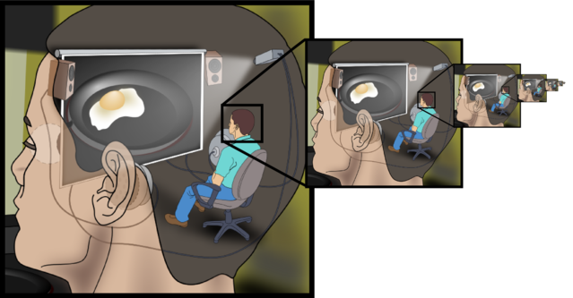

We do we Sleep? Scientists might have figured out!
Humans spend nearly a third of their lives asleep. Going without sleep will literally make you psychotic and, eventually, kill you. It's clear that shut-eye is crucial to the body's ability to function.
But no one knows what sleep actually does.
"It's sort of embarrassing," said Dr. Michael Halassa, a neuroscientist at New York University. "It's obvious why we need to eat, for example, and reproduce … but it's not clear why we need to sleep at all."
We're vulnerable when we're asleep, so whatever sleep does, it must be worth the risk of the brain taking itself mostly offline. There are a few theories about why we sleep, and although none of them are totally solid, a few try to explain what happens each night, pulling in research on topics ranging from cellular processes to cognition. Researchers say it does seem clear that sleep is key to the brain's ability to recognize itself - a feature called plasticity.
Sleep Stages
It's not hard to prove that sleep is important. Rats totally deprived of sleep die within two or three weeks, according to research by the pioneering University of Chicago sleep scientist Allan Rechtschaffen. No one has done similar experiments on humans, for obvious reasons, but a 2014 study published in The Journal of Neuroscience found that a mere 24 hours of sleep deprivation caused healthy people to have hallucinations and other schizophrenia-like symptoms.
One reason it is difficult to get a handle on why we sleep is that sleep is actually pretty difficult to isolate and study. Sleep-deprivation studies are the most common way to study sleep, said Marcos Frank, a neuroscientist at the University of Washington, but depriving an animal of sleep disrupts many of its biological systems. It's hard to tell which outcomes are directly attributable to sleep deprivation rather than, say, stress.
What do we know about sleep?
One conclusion that has emerged from sleep research is that sleep does appear to be largely a brain-focused phenomenon, Frank said. Although sleep deprivation affects the immune system and alters hormone levels in the body, its most consistent impacts across animals are in the brain.
What are the Boundaries of the Mind?
Our mind extends to the tools we use, and to the people we work with.
As a human being, you have a conscious experience of the external world around you as well as an internal world of thoughts, images, and feelings. You also have a unified sense of self, that is, you view yourself as a single individual who thinks and acts consistently from one moment to the next. Conscious experience and sense of self are considered to be products of the mind.
But where exactly is your mind? If you accept the evidence from neuroscience, then it seems pretty clear that our experience of mind is a product of brain activity. In brief, the mind is what the brain does.
If we look at the brain, though, we find no command center where the “self” resides. In other words, there’s no little guy up there pushing buttons and pulling levers. This is what philosophers call a “homunculus.” And if there were one, we’d have to ask, “What’s inside its head?”
Instead, the brain is a collection of billions of neurons organized into a highly-complex communication system. Somehow, conscious experience and sense of self arise from the electrical and chemical activity of this system.
Perhaps, then, the mind is the brain, or at least the brain in action. But what if I removed your brain from your skull and put it in a jar of life-preserving fluid? Let’s say I also hook up your brain to a computer that would provide inputs just as it would normally receive from the sense organs. Is that you inside the jar? Would you really have conscious experiences and a unified sense of self? The first Matrix movie played with the old philosophical conundrum of a “brain in a vat.”
You probably agree that your brain needs to be inside your body—and fully connected to it—to generate conscious experience and sense of self. In other words, your mind isn’t just your brain. It encompasses your whole body. This way of viewing the mind is known as “embodied cognition.”
Are we then nothing more than “skin-encapsulated egos,” as beat-generation philosopher Alan Watts put it? He certainly didn’t think so. But he based his hunch on Eastern mysticism, not neuroscience.
Related Articles